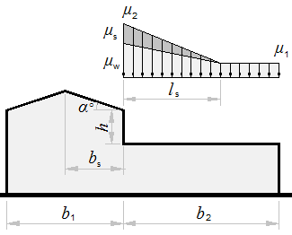
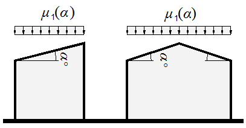
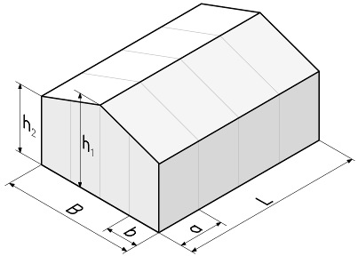
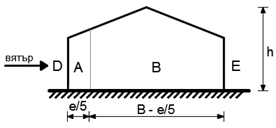
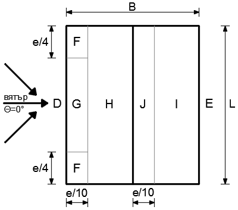
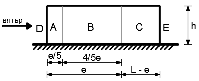
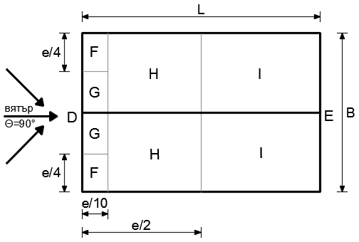

Loads¶
CalcpadCE worksheets in this section determine the climatic and operational actions on structures that govern the design of buildings — wind pressure, snow accumulation and the contact stresses transferred to the ground. The calculations follow Eurocode parts 1991-1-3 and 1991-1-4 and translate the code provisions directly into branching logic over terrain category, roof pitch and reference area.
The snow load worksheet returns \(s = \mu_1 \cdot C_e \cdot C_t \cdot s_k\) for monopitch and duopitch roofs, with the shape coefficient \(\mu_1\) chosen from the pitch angle. The snow drift sheet covers the more demanding case of a roof abutting a taller construction, where the drift length \(l_s\) and the additional shape coefficients \(\mu_s\) and \(\mu_w\) describe the wind-driven and sliding contributions. The wind load sheet builds the peak velocity pressure \(q_p\) from the basic wind velocity, terrain roughness and turbulence, then resolves zone-by-zone external pressure coefficients on walls and roof slopes for the transverse and longitudinal directions, and reduces them to line loads on columns, beams and purlins.
The foundation pad optimisation closes the load-take-down chain by sizing the rectangular base for the resulting axial force and biaxial bending so that the maximum contact pressure stays below the permissible value, no uplift occurs and the base area is a minimum — the optimum is found numerically with Inf over the side-ratio \(k = a/b\).
Optimization of Foundation Pad Dimensions¶
Numerical sizing of a rectangular foundation pad under axial force and biaxial bending: the side-ratio \(k = a / b\) that minimises the base area while keeping the maximum stress below the permissible value and avoiding uplift is found with the embedded Inf solver.
"Single load case problem
'Loads:
' Compression -'N = 1000'kN
' Bending along x-axis -'M_x = 200'kNm
' Bending along y-axis -'M_y = 400'kNm
'Permissible base stress -'R_0 = 200'kPa
'The mean foundation size is determined, using the fixed point method:
'Number of iterations -'n = 10
'Initial value -'a = N/R_0'm
'Solution -'a = $Repeat{a = cbrt((N*a + abs(M_x) + abs(M_y))/R_0) @ k = 1 : n}
'The target function (to be minimized) is the base area:
'<var>A</var> = <var>a</var>·<var>b</var> = min
'The target parameter is the ratio of the dimensions - <var>k</var> = <var>a</var>/<var>b</var>, within the limits:
k_min = 0.2'and'k_max = 5
'Limits for dimensions:
a_min = k_min*a/4'm
a_max = k_max*a*4'm
#if abs(M_x) < abs(M_y)
k_min = 1'- for |<var>M</var><sub>x</sub>| < |<var>M</var><sub>y</sub>|
#else
k_max = 1'- for |<var>M</var><sub>x</sub>| > |<var>M</var><sub>y</sub>|
#end if
'Theoretical value of the target parameter:
#if M_x ≡ 0
k = k_min
#else
k = max(k_min; min(abs(M_y/M_x); k_max))
#end if
'Load eccentricities:
e_x = M_x/N', 'e_y = M_y/N
'The solution must satisfy the following constraints (resistance criteria):
'1.The maximal stress must not exceed the permissible value:
p_max(a; b) = N/(a*b)*(1 + 6*(abs(e_x)/a + abs(e_y)/b))
'2. The minimal stress must be not less than zero (no uplift):
p_min(a; b) = N/(a*b)*(1 - 6*(abs(e_x)/a + abs(e_y)/b))
'Dimension that satisfies the constraints as a function of the target parameter <var>k</var>:
a_p,max(k) = $Find{p_max(a; a*k) - R_0 @ a = a_min : a_max}
a_p,min(k) = $Find{p_min(a; a*k) @ a = a_min : a_max}
a(k) = max(a_p,min(k); a_p,max(k))
'Foundation base area as a function of the target parameter <var>k</var>:
A(k) = a(k)^2*k
'The minimum value of the area and the respective target parameter are calculated by the embedded $Inf function:
A_inf = $Inf{A(k) @ k = k_min : k_max}
k = k_inf'- equal to the theoretical value
'The optimal dimensions of the foundation pad are:
a = a(k)'m, 'b = a*k'm
'The calculated minimal and maximal base stresses are:
p_min(a; b)'kPa
p_max(a; b)'kPa2
#hide
PlotWidth = 300','PlotHeight = 150','PlotSVG = 1
#show
'Plot for target function and solution:
$Plot{A(k) & k_inf|(k - k_min)*A_inf/(k_max - k_min) & k_inf|A_inf @ k = k_min : k_max}
"Multiple load cases problem
'Loads:
' Compression -'N(i) = take(i; 500; 1200; 1500; 3000)'kN
' Bending along x-axis -'M_x(i) = take(i; 100; -500; 200; 100)'kNm
' Bending along y-axis -'M_y(i) = take(i; 200; -200; 800; 250)'kNm
'Permissible base stress -'R_0 = 200'kPa
#hide
a = 0
i = 0
n = 10
#repeat 4
i = i + 1
a_i = N(i)/R_0
a_i = $Repeat{a_i = cbrt((N(i)*a_i + abs(M_x(i)) + abs(M_y(i)))/R_0) @ k = 1 : n}
#if a_i > a
a = a_i
#end if
#loop
#show
'Mean foundation size -'a'm (calculated as maximum from all load cases)
'Limits for the target parameter:
k_min = 0.2','k_max = 4
'Limits for dimensions:
a_min = k_min*a/4'm
a_max = k_max*a*4'm
'Load eccentricities:
e_x(i) = M_x(i)/N(i)', 'e_y(i) = M_y(i)/N(i)
'The solution must satisfy the following constraints (resistance criteria):
'1.The max stress must not exceed the permissible one for each load case <var>i</var>:
p_max,i(a; b; i) = N(i)/(a*b)*(1 + 6*(abs(e_x(i))/a + abs(e_y(i))/b))
'2.The min stress must be not less than zero (no uplift) for each load case <var>i</var>:
p_min,i(a; b; i) = N(i)/(a*b)*(1 - 6*(abs(e_x(i))/a + abs(e_y(i))/b))
'Dimension that satisfies the constraints as a function of the target parameter <var>k</var> and the load case <var>i</var>:
a_p,max,i(k; i) = $Find{p_max,i(a; a*k; i) - R_0 @ a = a_min : a_max}
a_p,min,i(k; i) = $Find{p_min,i(a; a*k; i) @ a = a_min : a_max}
a_i(k; i) = max(a_p,min,i(k; i); a_p,max,i(k; i))
'Foundation pad area as a function of the target parameter <var>k</var>:
A_i(k; i) = a_i(k; i)^2*k
A_max(k) = max(A_i(k; 1); A_i(k; 2); A_i(k; 3); A_i(k; 4))
'The minimum value of the area and the respective target parameter are calculated by the embedded $Inf function:
A_inf = $Inf{A_max(k) @ k = k_min : k_max}
k = k_inf
'The optimal dimensions of the foundation pad are:
a = sqrt(A_inf/k)'m, 'b = a*k'm
#hide
i = 0
PlotWidth = 400','PlotHeight = 200
#show
'Calculated base stresses:
#val
'<table class="bordered data">
'<tr><th>i</th><th>p<sub>min</sub></th><th>p<sub>max</sub></th></tr>
#repeat 4
'<tr><td> 'i = i + 1'</td><td>'p_min,i(a; b; i):0.00'</td><td>'p_max,i(a; b; i):0.00'</td></tr>
#loop
'</table>
#equ
'Plot for target functions and solution:
$Plot{k|A_i(k; 1) & k|A_i(k; 2) & k|A_i(k; 3) & k|A_i(k; 4) & A_max(k) & k_inf|(k - k_min)*A_inf/(k_max - k_min) & k_inf|A_inf @ k = k_min : k_max}
'<p>Legend:  
'<b style="color:Tomato">━━</b> 1  
'<b style="color:YellowGreen">━━</b> 2  
'<b style="color:DodgerBlue">━━</b> 3  
'<b style="color:Gold">━━</b> 4  
'<b style="color:MediumVioletRed">━━</b> max</p>
Loads:
Compression - N = 1000 kN
Bending along x-axis - Mx = 200 kNm
Bending along y-axis - My = 400 kNm
Permissible base stress - R0 = 200 kPa
The mean foundation size is determined, using the fixed point method:
Number of iterations - n = 10
Initial value - a = NR0 = 1000200 = 5 m
Solution - a = $Repeat{a = 3 N · a + | Mx | + | My |R0 for k = 1...n} = 2.490854
The target function (to be minimized) is the base area:
A = a·b = minThe target parameter is the ratio of the dimensions - k = a/b, within the limits:
kmin = 0.2 and kmax = 5
Limits for dimensions:
amin = kmin · a4 = 0.2 · 2.4908544 = 0.1245427 m
amax = kmax · a · 4 = 5 · 2.490854 · 4 = 49.817089 m
kmin = 1 - for |Mx| < |My|
Theoretical value of the target parameter:
k = max(kmin; min(|MyMx|; kmax)) = max(1; min(|400200|; 5)) = 2
Load eccentricities:
ex = MxN = 2001000 = 0.2 , ey = MyN = 4001000 = 0.4
The solution must satisfy the following constraints (resistance criteria):
1.The maximal stress must not exceed the permissible value:
pmax ( a; b ) = Na · b · (1 + 6 · (| ex |a + | ey |b))
2. The minimal stress must be not less than zero (no uplift):
pmin ( a; b ) = Na · b · (1 − 6 · (| ex |a + | ey |b))
Dimension that satisfies the constraints as a function of the target parameter k:
ap,max ( k ) = $Find{pmax ( a; a · k ) − R0; a ∈ [amin; amax]}
ap,min ( k ) = $Find{pmin ( a; a · k ) ; a ∈ [amin; amax]}
a ( k ) = max ( ap,min ( k ) ; ap,max ( k ) )
Foundation base area as a function of the target parameter k:
A ( k ) = a ( k ) 2 · k
The minimum value of the area and the respective target parameter are calculated by the embedded $Inf function:
Ainf = $inf{A ( k ) ; k ∈ [kmin; kmax]} = 11.52
k = kinf = 2 - equal to the theoretical value
The optimal dimensions of the foundation pad are:
a = a ( k ) = a ( 2 ) = 2.4 m, b = a · k = 2.4 · 2 = 4.8 m
The calculated minimal and maximal base stresses are:
pmin ( a; b ) = pmin ( 2.4; 4.8 ) = 0 kPa
pmax ( a; b ) = pmax ( 2.4; 4.8 ) = 173.611111 kPa2
Plot for target function and solution:
Loads:
Compression - N ( i ) = take ( i; 500; 1200; 1500; 3000 ) kN
Bending along x-axis - Mx ( i ) = take ( i; 100; -500; 200; 100 ) kNm
Bending along y-axis - My ( i ) = take ( i; 200; -200; 800; 250 ) kNm
Permissible base stress - R0 = 200 kPa
Mean foundation size - a = 3.930036 m (calculated as maximum from all load cases)
Limits for the target parameter:
kmin = 0.2 , kmax = 4
Limits for dimensions:
amin = kmin · a4 = 0.2 · 3.9300364 = 0.1965018 m
amax = kmax · a · 4 = 4 · 3.930036 · 4 = 62.880581 m
Load eccentricities:
ex ( i ) = Mx ( i ) N ( i ) , ey ( i ) = My ( i ) N ( i )
The solution must satisfy the following constraints (resistance criteria):
1.The max stress must not exceed the permissible one for each load case i:
pmax,i ( a; b; i ) = N ( i ) a · b · (1 + 6 · (| ex ( i ) |a + | ey ( i ) |b))
2.The min stress must be not less than zero (no uplift) for each load case i:
pmin,i ( a; b; i ) = N ( i ) a · b · (1 − 6 · (| ex ( i ) |a + | ey ( i ) |b))
Dimension that satisfies the constraints as a function of the target parameter k and the load case i:
ap,max,i ( k; i ) = $Find{pmax,i ( a; a · k; i ) − R0; a ∈ [amin; amax]}
ap,min,i ( k; i ) = $Find{pmin,i ( a; a · k; i ) ; a ∈ [amin; amax]}
ai ( k; i ) = max ( ap,min,i ( k; i ) ; ap,max,i ( k; i ) )
Foundation pad area as a function of the target parameter k:
Ai ( k; i ) = ai ( k; i ) 2 · k
Amax ( k ) = max ( Ai ( k; 1 ) ; Ai ( k; 2 ) ; Ai ( k; 3 ) ; Ai ( k; 4 ) )
The minimum value of the area and the respective target parameter are calculated by the embedded $Inf function:
Ainf = $inf{Amax ( k ) ; k ∈ [kmin; kmax]} = 17.303512
k = kinf = 1.883619
The optimal dimensions of the foundation pad are:
a = Ainfk = 17.3035121.883619 = 3.030893 m, b = a · k = 3.030893 · 1.883619 = 5.709047 m
Calculated base stresses:
| i | pmin | pmax |
|---|---|---|
| 1 | 5.307931 | 52.483806 |
| 2 | 0 | 138.70017 |
| 3 | 15.216931 | 158.158282 |
| 4 | 146.750425 | 200 |
Plot for target functions and solution:
Legend: ━━ 1 ━━ 2 ━━ 3 ━━ 4 ━━ max
Snow Drift¶
Eurocode EN 1991-1-3 snow drift on a roof abutting a taller construction: drift length \(l_s\), sliding coefficient \(\mu_s\) and wind coefficient \(\mu_w\) from the geometry of the higher and lower roofs.
'<small>According to <strong>Eurocode</strong>: EN 1991-1-3, § 5.3.6</small>
'<div style="max-width:180mm">
'<img class="side" style="width:210pt;" src="../../Images/structures/loads/snow-drift.png" alt="snow-drift.png">
'Characteristic snow load on the ground -'s_k = ?'kN/m<sup>2</sup>
'Higher roof width -'b_1 = ?'m
'Sliding surface width -'b_s = ?'m
'Lower roof width -'b_2 = ?'m
'height difference -'h = ?'m
'Pitch angle of the higher roof -'α = ?'<sup>o</sup>
#post
'Shape coefficient for the higher roof
#if α ≤ 15
μ_1h = 0'(α ≤ 15 <sup>o</sup>)
#else
#if α ≤ 30
μ_1h = 0.8'(15<sup>o</sup> < α ≤ 30<sup>o</sup>)
#else if α < 60
μ_1h = 0.8*(60 - α)/30'(30<sup>o</sup> < α < 60<sup>o</sup>)
#else
μ_1h = 0'(α ≥ 60<sup>o</sup>)
#end if
#end if
'Drift length
'<p class="ref">(5.9) from EN 1991-1-3</p>
l_s = max(5; min(2*h;15))'m
'Shape coefficient due to sliding
'<p class="ref">EN 1991-1-3, § 5.3.6 (1)</p>
μ_s = μ_1h * b_s / l_s
'Shape coefficient due to wind
'<p class="ref">(5.8) from EN 1991-1-3</p>
μ_w_ = min((b_1 + b_2)/(2*h); 2*h/s_k)
μ_w = max(0.8; min(μ_w_;4))
'Shape coefficient for snow load
'<p class="ref">(5.6) from EN 1991-1-3</p>
μ_1 = 0.8
'<p class="ref">(5.7) from EN 1991-1-3</p>
μ_2 = μ_s + μ_w
#if b_2 < l_s
'Shape coefficient for the edge of the lower roof
μ_12 = (μ_1 - μ_2)*b_2/l_s + μ_2
#end if
#show
'</div>
1.5 18 9 36 6.2 3

Characteristic snow load on the ground - sk = 1.5 kN/m2
Higher roof width - b1 = 18 m
Sliding surface width - bs = 9 m
Lower roof width - b2 = 36 m
height difference - h = 6.2 m
Pitch angle of the higher roof - α = 3 o
Shape coefficient for the higher roof
μ1h = 0 (α ≤ 15 o)
Drift length
(5.9) from EN 1991-1-3
ls = max ( 5; min ( 2 · h; 15 ) ) = max ( 5; min ( 2 · 6.2; 15 ) ) = 12.4 m
Shape coefficient due to sliding
EN 1991-1-3, § 5.3.6 (1)
μs = μ1h · bsls = 0 · 912.4 = 0
Shape coefficient due to wind
(5.8) from EN 1991-1-3
μw_ = min(b1 + b22 · h; 2 · hsk) = min(18 + 362 · 6.2; 2 · 6.21.5) = 4.354839
μw = max ( 0.8; min ( μw_; 4 ) ) = max ( 0.8; min ( 4.354839; 4 ) ) = 4
Shape coefficient for snow load
(5.6) from EN 1991-1-3
μ1 = 0.8
(5.7) from EN 1991-1-3
μ2 = μs + μw = 0 + 4 = 4
Snow Load¶
Eurocode EN 1991-1-3 snow load on monopitch and duopitch roofs: shape coefficient \(\mu_1\) selected from the pitch angle and combined with exposure and thermal factors.
'<small>According to <strong>Eurocode</strong>: EN 1991-1-3</small>
'<div style="max-width:180mm">
'<img style="width:200pt;" src="../../Images/structures/loads/snow.png" alt="snow.png"><br /><br />
'Characteristic snow load on the ground -'s_k = ?'kN/m<sup>2</sup>
'Roof pitch angle -'α = ?'<sup>o</sup>
#post
#if α ≤ 30
'Snow shape coefficient -'μ_1 = 0.8'(α ≤ 30 <sup>o</sup>)
#else if'<span style="display:none;">'α < 60'</span>
'Snow shape factor -'μ_1 = 0.8*(60 - α)/30'(α < 60 <sup>o</sup>)
#else
'Snow shape coefficient -'μ_1 = 0'(α > 60 <sup>o</sup>)
#end if
#show
'Exposure factor -'C_e = ?
'Thermal factor -'C_t = ?
#post
'<p class="ref">[EN 1991-1-3, Clause 5.2 (3)a]</p>
'Snow load on roof
s =μ_1*C_e*C_t*s_k'kN/m<sup>2</sup>
#show
'</div>
1 0 1 1

Characteristic snow load on the ground - sk = 1 kN/m2
Roof pitch angle - α = 0 o
Snow shape coefficient - μ1 = 0.8 (α ≤ 30 o)
Exposure factor - Ce = 1
Thermal factor - Ct = 1
[EN 1991-1-3, Clause 5.2 (3)a]
Snow load on roof
s = μ1 · Ce · Ct · sk = 0.8 · 1 · 1 · 1 = 0.8 kN/m2
Wind Load¶
Eurocode EN 1991-1-4 wind on a rectangular building with duopitch roof: peak velocity pressure, zone-by-zone external pressure coefficients and reduction to line loads on columns, beams and purlins.
'<small>According to <strong>Eurocode</strong>: EN 1991-1-4</small>
'<div style="max-width:180mm">
'<img style="width:225pt;" class="side" src="../../Images/structures/loads/wind-3d.png" alt="wind-3d.png">'
'
'
'<h4>Dimensions of the building</h4>
'Width -'B = ? {12}'m
'Length -'L = ? {30}'m
'Height at roof ridge -'h_1 = ? {9}'m
'Height at roof eaves -'h_2 = ? {8}'m
'Pitch angle
α = atan((h_1 - h_2)*2/B)'°
'Spacing between:
' - frames -'a = ? {6}'m
' - wind columns -'b = ? {4}'m
' - side beams -'c_s = ? {2}'m
' - purlins -'c_p = ? {1}'m
#post
'(If the above distances are ≤ 0, the corresponding loads will not be calculated)
#if c_s > 0
'Reference area for side beams -'A_sa = c_s*a'm²,'A_sb = c_s*b'm²
#end if
#if c_p > 0
'Reference area for purlins -'A_p = c_p*a'm²
#end if
'
'
#show
'<h4>Basic velocity pressure</h4>
'Fundamental value of the basic wind velocity -'v_b_0 = ? {26}'kN/m²
#post
'Directional factor -'C_dir = 1.0
'Seasonal factor -'C_season = 1.0
'<p class="ref">[EN 1991-1-4 (4.1)]</p>
'Basic wind velocity -'v_b = C_dir*C_season*v_b_0'm/s
'Orography factor -'C_0 = 1.0
#pre
'<p id="C" style="display:none;">'C = ? {4}'</p>
'<p class="ref">[EN 1991-1-4, Table 4.1]</p>
'Terrain categories
'<p><select data-target="C">
'<option value="0"> 0. Sea or coastal area...</option>
'<option value="1"> I. Lakes or flat and horizontal area...</option>
'<option value="2"> II. Area with low vegetation...</option>
'<option value="3"> III. Area with regular cover of vegetation or buildings...</option>
'<option value="4"> IV. Area in which at least 15 % of the surface is covered with buildings with h > 15 m</option>
'</select></p>
#post
'<p class="ref">[EN 1991-1-4, Table 4.1]</p>
#if C ≡ 0
'Terrain category - 0:'z_0 = 0.003'm,'z_min = 1.0'm,'z_max = 200'm
'Sea or coastal area exposed to the open sea.
#else if C ≡ 1
'Terrain category - I:'z_0 = 0.01'm,'z_min = 1.0'm,'z_max = 200'm
'Lakes or flat and horizontal area with negligible vegetation and without obstacles.
#else if C ≡ 2
'Terrain category - II:'z_0 = 0.05'm,'z_min = 2.0'm,'z_max = 200'm
'Area with low vegetation such as grass and isolated obstacles (trees, buildings) with separations of at least 20 obstacle heights.
#else if C ≡ 3
'Terrain category - III:'z_0 = 0.3'm,'z_min = 5.0'm,'z_max = 200'm
'Area with regular cover of vegetation or buildings or with isolated obstacles with separations of maximum 20 obstacle heights (such as villages, suburban terrain, permanent forest).
#else if C ≡ 4
'Terrain category - IV:'z_0 = 1.0'm,'z_min = 10.0'm,'z_max = 200'm
'Area in which at least 15 % of the surface is covered with buildings and their average height exceeds 15 m.
#else
'Invalid category
#end if
'Reference height -'z = h_1'm
'<p class="ref">[EN 1991-1-4 (4.5)]</p>
'Terrain factor - 'k_r = 0.19*(z_0/0.05)^0.07
'<p class="ref">[EN 1991-1-4 (4.4)]</p>
#if z < z_min
'Roughness factor -'C_r = k_r*ln(z_min/z_0)
#else
'Roughness factor -'C_r = k_r*ln(z/z_0)
#end if
'Turbulence factor -'k_I = 1.0
'<p class="ref">[EN 1991-1-4 (4.7)]</p>
#if z < z_min
'Turbulence intensity -'I_v = k_I/(C_0*ln(z_min/z_0))
#else
'Turbulence intensity -'I_v = k_I/(C_0*ln(z/z_0))
#end if
'Basic velocity pressure
'<p class="ref">[EN 1991-1-4 (4.10)]</p>
q_b = 1.25/2*v_b^2*10^-3'kN/m²
'Exposure factor
C_e = (1 + 7*I_v)*C_r^2*C_0^2
'<p><b>Peak velocity pressure</b></p>
'<p class="ref">[EN 1991-1-4 (4.8)]</p>
q_p = C_e*q_b'kN/m²
'Building height - 'h_1'< 15 m
'<p class="ref">[EN 1991-1-4, p. 6.2(1)]</p>
'Size factor - 'C_s = 1', Dynamic factor - 'C_d = 1
'Structural factor - 'C_s*C_d
#show
'Internal pressure coefficient -'C_pi = ? {-0.3}
'<p class="ref">[EN 1991-1-4 Fig.7.13, Note 2]</p>
'(should be taken the relevant value of -0.3 and +0.2)
#post
'<!--'
C_pe,A = 0''C_pe,B = 0''C_pe,C = 0''C_pe,D = 0''C_pe,E = 0
C_pe,F = 0''C_pe,G = 0''C_pe,H = 0''C_pe,I = 0''C_pe,J = 0
w_c,A = 0''w_c,B = 0''w_c,C = 0''w_c,D = 0''w_c,E = 0
w_s,A = 0''w_s,B = 0''w_s,C = 0''w_s,D = 0''w_s,E = 0
w_b,F = 0''w_b,G = 0''w_b,H = 0''w_b,I = 0''w_b,J = 0
w_s,F = 0''w_s,G = 0''w_s,H = 0''w_s,I = 0''w_s,J = 0
'<-->
'
'
'<h4>Wind in transverse direction</h4>
e = min(L; 2*h_1)'m
'
'<p><b>Walls</b></p>
#if e ≤ B
'<!--'case = 1'-->
e'm ≤'B'm
'<img style="width:200pt;" src="../../Images/structures/loads/wind-0-wall-1.png" alt="wind-0-wall-1.png">'
e/5'm,'4/5*e'm,'B - e'm
#else if e < 5*B
'<!--'case = 2'-->
e'm <'5*B'm
'<img style="width:200pt;" src="../../Images/structures/loads/wind-0-wall-2.png" alt="wind-0-wall-2.png">'
e/5'm,'B - e/5'm
#else
'<!--'case = 3'-->
e'm ≥'5*B'm
'<img style="width:200pt;" src="../../Images/structures/loads/wind-0-wall-3.png" alt="wind-0-wall-3.png">'
B'm
#end if
h_1/B
'<div class="fold">
'<p><b>Results</b></p>
'<p><b>External pressure coefficients</b></p>
'Zone A -'C_pe,10,A = -1.2','C_pe,1,A = -1.4
#if case < 3
'Zone B -'C_pe,10,B = -0.8','C_pe,1,B = -1.1
#end if
#if case < 2
'Zone C -'C_pe,10,C = -0.5','C_pe,1,C = -0.5
#end if
#if h_1/B ≤ 0.25
'Zone D -'C_pe,10,D = 0.7','C_pe,1,D = 1.0
'Zone E -'C_pe,10,E = -0.3','C_pe,1,E = -0.3
#else if h_1/B ≤ 1
'Zone D -'C_pe,10,D = 0.7 + 0.1*(h_1/B - 0.25)/0.75','C_pe,1,D = 1.0
'Zone E -'C_pe,10,E = -0.3 - 0.2*(h_1/B - 0.25)/0.75','C_pe,1,E = C_pe,10,E
#else if h_1/B ≤ 5
'Zone D -'C_pe,10,D = 0.8','C_pe,1,D = 1.0
'Zone E -'C_pe,10,E = -0.5 - 0.2*(h_1/B - 1)/4','C_pe,1,E = C_pe,10,E
#else
'Zone D -'C_pe,10,D = 0.8','C_pe,1,D = 1.0
'Zone E -'C_pe,10,E = -0.7','C_pe,1,E = C_pe,10,E
#end if
'<p><b>Surface loads</b></p>
'Zone D -'w_D = (C_s*C_d*C_pe,10,D - C_pi)*q_p'kN/m²
'Zone E -'w_E = (C_pe,10,E - C_pi)*q_p'kN/m²
'Zone A -'w_A = (C_pe,10,A - C_pi)*q_p'kN/m²
#if case < 3
'Zone B -'w_B = (C_pe,10,B - C_pi)*q_p'kN/m²
#end if
#if case < 2
'Zone C -'w_C = (C_pe,10,C - C_pi)*q_p'kN/m²
#end if
#if a > 0
'<p><b>Loads on main columns</b></p>
'Windward side -'w_c,D = (C_pe,10,D - C_pi)*q_p*a'kN/m
'Leeward side -'w_c,E = (C_pe,10,E - C_pi)*q_p*a'kN/m
#end if
#if b > 0
'<p><b>Loads on wind columns</b></p>
'Zone A -'w_c,A = (C_pe,10,A - C_pi)*q_p*b'kN/m
#if case < 3
'Zone B -'w_c,B = (C_pe,10,B - C_pi)*q_p*b'kN/m
#end if
#if case < 2
'Zone C -'w_c,C = (C_pe,10,C - C_pi)*q_p*b'kN/m
#end if
#end if
#if c_s > 0
'<p><b>Coefficients for side beams</b></p>
#if A_sb ≤ 1
'Zone A -'C_pe,A = C_pe,1,A
#if case < 3
'Zone B -'C_pe,B = C_pe,1,B
#end if
#if case < 2
'Zone C -'C_pe,C = C_pe,1,C
#end if
#else if A_sb ≥ 10
'Zone A -'C_pe,A = C_pe,10,A
#if case < 3
'Zone B -'C_pe,B = C_pe,10,B
#end if
#if case < 2
'Zone C -'C_pe,C = C_pe,10,C
#end if
#else
'Zone A -'C_pe,A = C_pe,1,A - (C_pe,1,A - C_pe,10,A)*log(A_sb)
#if case < 3
'Zone B -'C_pe,B = C_pe,1,B - (C_pe,1,B - C_pe,10,B)*log(A_sb)
#end if
#if case < 2
'Zone C -'C_pe,C = C_pe,1,C - (C_pe,1,C - C_pe,10,C)*log(A_sb)
#end if
#end if
#if A_sa ≤ 1
'Zone D -'C_pe,D = C_pe,1,D
'Zone E -'C_pe,E = C_pe,1,E
#else if A_sa ≥ 10
'Zone D -'C_pe,D = C_pe,10,D
'Zone E -'C_pe,E = C_pe,10,E
#else
'Zone D -'C_pe,D = C_pe,1,D - (C_pe,1,D - C_pe,10,D)*log(A_sa)
'Zone E -'C_pe,E = C_pe,1,E - (C_pe,1,E - C_pe,10,E)*log(A_sa)
#end if
'<p><b>Loads on side beams</b></p>
'Zone A -'w_s,A = (C_pe,A - C_pi)*q_p*c_s'kN/m
#if case < 3
'Zone B -'w_s,B = (C_pe,B - C_pi)*q_p*c_s'kN/m
#end if
#if case < 2
'Zone C -'w_s,C = (C_pe,C - C_pi)*q_p*c_s'kN/m
#end if
'Zone D -'w_s,D = (C_pe,D - C_pi)*q_p*c_s'kN/m
'Zone E -'w_s,E = (C_pe,E - C_pi)*q_p*c_s'kN/m
#end if
'<p><b>Table</b></p>
'</div>
#val
'<table class="bordered centered">
'<tr><th rowspan="2">Zone</th><th colspan="3">Pressure coefficients<sup>1)</sup></th><th colspan="3">Loading<sup>4)</sup></th></tr>
'<tr><th><i>C</i><sub>pe,10</sub><br />(for 10 m²)</th><th><i>C</i><sub>pe,1</sub><br />(for 1 m²)</th><th><i>C</i><sub>pe</sub><br />(side beams)</th><th>Surface <sup>2)</sup>,<br />kN/m²</th><th>Columns <sup>3)</sup>,<br />kN/m</th><th>Side beams <sup>3)</sup>,<br />kN/m</th></tr>
'<tr><td>Zone A</td><td>'C_pe,10,A'</td><td>'C_pe,1,A'</td><td>'C_pe,A'</td><td>'w_A'</td><td>'w_c,A'</td><td>'w_s,A'</td></tr>
#if case < 3
'<tr><td>Zone B</td><td>'C_pe,10,B'</td><td>'C_pe,1,B'</td><td>'C_pe,B'</td><td>'w_B'</td><td>'w_c,B'</td><td>'w_s,B'</td></tr>
#end if
#if case < 2
'<tr><td>Zone C</td><td>'C_pe,10,C'</td><td>'C_pe,1,C'</td><td>'C_pe,C'</td><td>'w_C'</td><td>'w_c,C'</td><td>'w_s,C'</td></tr>
#end if
'<tr><td>Zone D</td><td>'C_pe,10,D'</td><td>'C_pe,1,D'</td><td>'C_pe,D'</td><td>'w_D'</td><td>'w_c,D'</td><td>'w_s,D'</td></tr>
'<tr><td>Zone E</td><td>'C_pe,10,E'</td><td>'C_pe,1,E'</td><td>'C_pe,E'</td><td>'w_E'</td><td>'w_c,E'</td><td>'w_s,E'</td></tr>
'</table>
#equ
'<br/>
'<p><b>Roof</b></p>
'<img style="width:200pt;" src="../../Images/structures/loads/wind-0-roof.png" alt="wind-0-roof.png">'
e'm,'e/4'm,'e/10'm
'(Four possible combinations for minimum and maximum loads on both slopes are required: { + , + }; { + , – }; { – , + }; { – , – })
'<div class="fold">
'<p><b>Minimum values (–)</b></p>
'<p><b>External pressure coefficients</b></p>
#if α ≡ 0
'Zone F -'C_pe,10,F = -1.8','C_pe,1,F = -2.5
'Zone G -'C_pe,10,G = -1.2','C_pe,1,G = -2.0
'Zone H -'C_pe,10,H = -0.7','C_pe,1,H = -1.2
'Zone I -'C_pe,10,I = -0.2','C_pe,1,I = -0.2
#else if α ≤ 5
k = (5 - α)/5
'Zone F -'C_pe,10,F = -1.7 - 0.1*k','C_pe,1,F = -2.5
'Zone G -'C_pe,10,G = -1.2','C_pe,1,G = -2.0
'Zone H -'C_pe,10,H = -0.6 - 0.1*k','C_pe,1,H = -1.2
'Zone I -'C_pe,10,I = -0.6 + 0.4*k','C_pe,1,I = -0.6 + 0.4*k
'Zone J -'C_pe,10,J = -0.6','C_pe,1,J = -0.6
#else if α ≤ 15
k = (15 - α)/10
'Zone F -'C_pe,10,F = -0.9 - 0.8*k','C_pe,1,F = -2.0 - 0.5*k
'Zone G -'C_pe,10,G = -0.8 - 0.4*k','C_pe,1,G = -1.5 - 0.5*k
'Zone H -'C_pe,10,H = -0.3 - 0.3*k','C_pe,1,H = -0.3 - 0.9*k
'Zone I -'C_pe,10,I = -0.4 - 0.2*k','C_pe,1,I = -0.4 - 0.2*k
'Zone J -'C_pe,10,J = -1.0 + 0.4*k','C_pe,1,J = -1.5 + 0.9*k
#else if α ≤ 30
k = (30 - α)/15
'Zone F -'C_pe,10,F = -0.5 - 0.4*k','C_pe,1,F = -1.5 - 0.5*k
'Zone G -'C_pe,10,G = -0.5 - 0.3*k','C_pe,1,G = -1.5
'Zone H -'C_pe,10,H = -0.2 - 0.1*k','C_pe,1,H = -0.2 - 0.1*k
'Zone I -'C_pe,10,I = -0.4','C_pe,1,I = -0.4
'Zone J -'C_pe,10,J = -0.5 - 0.5*k','C_pe,1,J = -0.5 - 1.0*k
#else if α ≤ 45
k = (45 - α)/15
'Zone F -'C_pe,10,F = 0.0 - 0.5*k','C_pe,1,F = 0.0 - 1.5*k
'Zone G -'C_pe,10,G = 0.0 - 0.5*k','C_pe,1,G = 0.0 - 1.5*k
'Zone H -'C_pe,10,H = 0.0 - 0.2*k','C_pe,1,H = 0.0 - 0.2*k
'Zone I -'C_pe,10,I = -0.2 - 0.2*k','C_pe,1,I = -0.2 - 0.2*k
'Zone J -'C_pe,10,J = -0.3 - 0.2*k','C_pe,1,J = -0.3 - 0.2*k
#else if α ≤ 60
k = (60 - α)/15
'Zone F -'C_pe,10,F = 0.7 - 0.7*k','C_pe,1,F = C_pe,10,F
'Zone G -'C_pe,10,G = 0.7 - 0.7*k','C_pe,1,G = C_pe,10,G
'Zone H -'C_pe,10,H = 0.7 - 0.7*k','C_pe,1,H = C_pe,10,H
'Zone I -'C_pe,10,I = -0.2','C_pe,1,I = C_pe,10,I
'Zone J -'C_pe,10,J = -0.3','C_pe,1,J = C_pe,10,J
#else if α ≤ 75
k = (75 - α)/15
'Zone F -'C_pe,10,F = 0.8 - 0.1*k','C_pe,1,F = C_pe,10,F
'Zone G -'C_pe,10,G = 0.8 - 0.1*k','C_pe,1,G = C_pe,10,G
'Zone H -'C_pe,10,H = 0.8 - 0.1*k','C_pe,1,H = C_pe,10,H
'Zone I -'C_pe,10,I = -0.2','C_pe,1,I = C_pe,10,I
'Zone J -'C_pe,10,J = -0.3','C_pe,1,J = C_pe,10,J
#end if
'<p><b>Surface loads</b></p>
'Zone F -'w_F = (C_pe,10,F - C_pi)*q_p'kN/m²
'Zone G -'w_G = (C_pe,10,G - C_pi)*q_p'kN/m²
'Zone H -'w_H = (C_pe,10,H - C_pi)*q_p'kN/m²
'Zone I -'w_I = (C_pe,10,I - C_pi)*q_p'kN/m²
#if α ≠ 0
'Zone J -'w_J = (C_pe,10,J - C_pi)*q_p'kN/m²
#end if
#if a > 0
'<p><b>Loads on girders</b></p>
'Zone F -'w_b,F = (C_pe,10,F - C_pi)*q_p*a'kN/m
'Zone G -'w_b,G = (C_pe,10,G - C_pi)*q_p*a'kN/m
'Zone H -'w_b,H = (C_pe,10,H - C_pi)*q_p*a'kN/m
'Zone I -'w_b,I = (C_pe,10,I - C_pi)*q_p*a'kN/m
#if α ≠ 0
'Zone J -'w_b,J = (C_pe,10,J - C_pi)*q_p*a'kN/m
#end if
#end if
#if c_p > 0
'<p><b>Coefficients for purlins</b></p>
#if A_p ≤ 1
'Zone F -'C_pe,F = C_pe,1,F
'Zone G -'C_pe,G = C_pe,1,G
'Zone H -'C_pe,H = C_pe,1,H
'Zone I -'C_pe,I = C_pe,1,I
#if α ≠ 0
'Zone J -'C_pe,J = C_pe,1,J
#end if
#else if A_p ≥ 10
'Zone F -'C_pe,F = C_pe,10,F
'Zone G -'C_pe,G = C_pe,10,G
'Zone H -'C_pe,H = C_pe,10,H
'Zone I -'C_pe,I = C_pe,10,I
#if α ≠ 0
'Zone J -'C_pe,J = C_pe,10,J
#end if
#else
'Zone F -'C_pe,F = C_pe,1,F - (C_pe,1,F - C_pe,10,F)*log(A_p)
'Zone G -'C_pe,G = C_pe,1,G - (C_pe,1,G - C_pe,10,G)*log(A_p)
'Zone H -'C_pe,H = C_pe,1,H - (C_pe,1,H - C_pe,10,H)*log(A_p)
'Zone I -'C_pe,I = C_pe,1,I - (C_pe,1,I - C_pe,10,I)*log(A_p)
#if α ≠ 0
'Zone J -'C_pe,J = C_pe,1,J - (C_pe,1,J - C_pe,10,J)*log(A_p)
#end if
#end if
'<p><b>Loads on purlins</b></p>
'(use for purlins design only and not for load take-down)
'Zone F -'w_s,F = (C_pe,F - C_pi)*q_p*c_p'kN/m
'Zone G -'w_s,G = (C_pe,G - C_pi)*q_p*c_p'kN/m
'Zone H -'w_s,H = (C_pe,H - C_pi)*q_p*c_p'kN/m
'Zone I -'w_s,I = (C_pe,I - C_pi)*q_p*c_p'kN/m
#if α ≠ 0
'Zone J -'w_s,J = (C_pe,J - C_pi)*q_p*c_p'kN/m
#end if
#end if
'<p><b>Table</b></p>
'</div>
#val
'<table class="bordered centered">
'<tr><th rowspan="2">Zone</th><th colspan="3">Pressure coefficients<sup>1)</sup></th><th colspan="3">Loading <sup>4)</sup></th></tr>
'<tr><th><i>C</i><sub>pe,10</sub><br />(for 10 m²)</th><th><i>C</i><sub>pe,1</sub><br />(for 1 m²)</th><th><i>C</i><sub>pe</sub><br />(purlins)</th><th>Surface <sup>2)</sup>,<br />kN/m²</th><th>Girders <sup>3)</sup>,<br />kN/m</th><th>Purlins <sup>3)</sup>,<br />kN/m</th></tr>
'<tr><td>Zone F</td><td>'C_pe,10,F'</td><td>'C_pe,1,F'</td><td>'C_pe,F'</td><td>'w_F'</td><td>'w_b,F'</td><td>'w_s,F'</td></tr>
'<tr><td>Zone G</td><td>'C_pe,10,G'</td><td>'C_pe,1,G'</td><td>'C_pe,G'</td><td>'w_G'</td><td>'w_b,G'</td><td>'w_s,G'</td></tr>
'<tr><td>Zone H</td><td>'C_pe,10,H'</td><td>'C_pe,1,H'</td><td>'C_pe,H'</td><td>'w_H'</td><td>'w_b,H'</td><td>'w_s,H'</td></tr>
'<tr><td>Zone I</td><td>'C_pe,10,I'</td><td>'C_pe,1,I'</td><td>'C_pe,I'</td><td>'w_I'</td><td>'w_b,I'</td><td>'w_s,I'</td></tr>
#if α ≠ 0
'<tr><td>Zone J</td><td>'C_pe,10,J'</td><td>'C_pe,1,J'</td><td>'C_pe,J'</td><td>'w_J'</td><td>'w_b,J'</td><td>'w_s,J'</td></tr>
#end if
'</table>
#equ
'<br/>
'<div class="fold">
'<p><b>Maximum values (+)</b></p>
#if α ≡ 0
'Zone F -'C_pe,10,F = -1.8','C_pe,1,F = -2.5
'Zone G -'C_pe,10,G = -1.2','C_pe,1,G = -2.0
'Zone H -'C_pe,10,H = -0.7','C_pe,1,H = -1.2
'Zone I -'C_pe,10,I = 0.2','C_pe,1,I = 0.2
#else if α ≤ 5
k = (5 - α)/5
'Zone F -'C_pe,10,F = 0.0','C_pe,1,F = 0.0
'Zone G -'C_pe,10,G = 0.0','C_pe,1,G = 0.0
'Zone H -'C_pe,10,H = 0.0','C_pe,1,H = 0.0
'Zone I -'C_pe,10,I = -0.6','C_pe,1,I = -0.6
'Zone J -'C_pe,10,J = 0.2','C_pe,1,J = 0.2
#else if α ≤ 15
k = (15 - α)/10
'Zone F -'C_pe,10,F = 0.2 - 0.2*k','C_pe,1,F = C_pe,10,F
'Zone G -'C_pe,10,G = 0.2 - 0.2*k','C_pe,1,G = C_pe,10,G
'Zone H -'C_pe,10,H = 0.2 - 0.2*k','C_pe,1,H = C_pe,10,H
'Zone I -'C_pe,10,I = 0.0 - 0.6*k','C_pe,1,I = C_pe,10,I
'Zone J -'C_pe,10,J = 0.0 + 0.2*k','C_pe,1,J = C_pe,10,J
#else if α ≤ 30
k = (30 - α)/15
'Zone F -'C_pe,10,F = 0.7 - 0.5*k','C_pe,1,F = C_pe,10,F
'Zone G -'C_pe,10,G = 0.7 - 0.5*k','C_pe,1,G = C_pe,10,G
'Zone H -'C_pe,10,H = 0.4 - 0.2*k','C_pe,1,H = C_pe,10,H
'Zone I -'C_pe,10,I = 0.0','C_pe,1,I = C_pe,10,H
'Zone J -'C_pe,10,J = 0.0','C_pe,1,J = C_pe,10,J
#else if α ≤ 45
k = (45 - α)/15
'Zone F -'C_pe,10,F = 0.7','C_pe,1,F = C_pe,10,F
'Zone G -'C_pe,10,G = 0.7','C_pe,1,G = C_pe,10,G
'Zone H -'C_pe,10,H = 0.6 - 0.2*k','C_pe,1,H = C_pe,10,H
'Zone I -'C_pe,10,I = 0.0','C_pe,1,I = C_pe,10,I
'Zone J -'C_pe,10,J = 0.0','C_pe,1,J = C_pe,10,J
#else if α ≤ 60
k = (60 - α)/15
'Zone F -'C_pe,10,F = 0.7 - 0.7*k','C_pe,1,F = C_pe,10,F
'Zone G -'C_pe,10,G = 0.7 - 0.7*k','C_pe,1,G = C_pe,10,G
'Zone H -'C_pe,10,H = 0.7 - 0.7*k','C_pe,1,H = C_pe,10,H
'Zone I -'C_pe,10,I = -0.2 + 0.2*k','C_pe,1,I = C_pe,10,I
'Zone J -'C_pe,10,J = -0.3 + 0.3*k','C_pe,1,J = C_pe,10,J
#else if α ≤ 75
k = (75 - α)/15
'Zone F -'C_pe,10,F = 0.8 - 0.1*k','C_pe,1,F = C_pe,10,F
'Zone G -'C_pe,10,G = 0.8 - 0.1*k','C_pe,1,G = C_pe,10,G
'Zone H -'C_pe,10,H = 0.8 - 0.1*k','C_pe,1,H = C_pe,10,H
'Zone I -'C_pe,10,I = -0.2','C_pe,1,I = C_pe,10,I
'Zone J -'C_pe,10,J = -0.3','C_pe,1,J = C_pe,10,J
#end if
'<p><b>Surface loads</b></p>
'Zone F -'w_F = (C_pe,10,F - C_pi)*q_p'kN/m²
'Zone G -'w_G = (C_pe,10,G - C_pi)*q_p'kN/m²
'Zone H -'w_H = (C_pe,10,H - C_pi)*q_p'kN/m²
'Zone I -'w_I = (C_pe,10,I - C_pi)*q_p'kN/m²
#if α ≠ 0
'Zone J -'w_J = (C_pe,10,J - C_pi)*q_p'kN/m²
#end if
#if a > 0
'<p><b>Loads on girders</b></p>
'Zone F -'w_b,F = (C_pe,10,F - C_pi)*q_p*a'kN/m
'Zone G -'w_b,G = (C_pe,10,G - C_pi)*q_p*a'kN/m
'Zone H -'w_b,H = (C_pe,10,H - C_pi)*q_p*a'kN/m
'Zone I -'w_b,I = (C_pe,10,I - C_pi)*q_p*a'kN/m
#if α ≠ 0
'Zone J -'w_b,J = (C_pe,10,J - C_pi)*q_p*a'kN/m
#end if
#end if
#if c_p > 0
'<p><b>Coefficients for purlins</b></p>
#if A_p ≤ 1
'Zone F -'C_pe,F = C_pe,1,F
'Zone G -'C_pe,G = C_pe,1,G
'Zone H -'C_pe,H = C_pe,1,H
'Zone I -'C_pe,I = C_pe,1,I
#if α ≠ 0
'Zone J -'C_pe,J = C_pe,1,J
#end if
#else if A_p ≥ 10
'Zone F -'C_pe,F = C_pe,10,F
'Zone G -'C_pe,G = C_pe,10,G
'Zone H -'C_pe,H = C_pe,10,H
'Zone I -'C_pe,I = C_pe,10,I
#if α ≠ 0
'Zone J -'C_pe,J = C_pe,10,J
#end if
#else
'Zone F -'C_pe,F = C_pe,1,F - (C_pe,1,F - C_pe,10,F)*log(A_p)
'Zone G -'C_pe,G = C_pe,1,G - (C_pe,1,G - C_pe,10,G)*log(A_p)
'Zone H -'C_pe,H = C_pe,1,H - (C_pe,1,H - C_pe,10,H)*log(A_p)
'Zone I -'C_pe,I = C_pe,1,I - (C_pe,1,I - C_pe,10,I)*log(A_p)
#if α ≠ 0
'Zone J -'C_pe,J = C_pe,1,J - (C_pe,1,J - C_pe,10,J)*log(A_p)
#end if
#end if
'<p><b>Loads on purlins</b></p>
'Zone F -'w_s,F = (C_pe,F - C_pi)*q_p*c_p'kN/m
'Zone G -'w_s,G = (C_pe,G - C_pi)*q_p*c_p'kN/m
'Zone H -'w_s,H = (C_pe,H - C_pi)*q_p*c_p'kN/m
'Zone I -'w_s,I = (C_pe,I - C_pi)*q_p*c_p'kN/m
#if α ≠ 0
'Zone J -'w_s,J = (C_pe,J - C_pi)*q_p*c_p'kN/m
#end if
#end if
'<p><b>Table</b></p>
'</div>
#val
'<table class="bordered centered">
'<tr><th rowspan="2">Zone</th><th colspan="3">Pressure coefficients<sup>1)</sup></th><th colspan="3">Loading <sup>4)</sup></th></tr>
'<tr><th><i>C</i><sub>pe,10</sub><br />(for 10 m²)</th><th><i>C</i><sub>pe,1</sub><br />(for 1 m²)</th><th><i>C</i><sub>pe</sub><br />(purlins)</th><th>Surface <sup>2)</sup>,<br />kN/m²</th><th>Girders<sup>3)</sup>,<br />kN/m</th><th>Purlins <sup>3)</sup>,<br />kN/m</th></tr>
'<tr><td>Zone F</td><td>'C_pe,10,F'</td><td>'C_pe,1,F'</td><td>'C_pe,F'</td><td>'w_F'</td><td>'w_b,F'</td><td>'w_s,F'</td></tr>
'<tr><td>Zone G</td><td>'C_pe,10,G'</td><td>'C_pe,1,G'</td><td>'C_pe,G'</td><td>'w_G'</td><td>'w_b,G'</td><td>'w_s,G'</td></tr>
'<tr><td>Zone H</td><td>'C_pe,10,H'</td><td>'C_pe,1,H'</td><td>'C_pe,H'</td><td>'w_H'</td><td>'w_b,H'</td><td>'w_s,H'</td></tr>
'<tr><td>Zone I</td><td>'C_pe,10,I'</td><td>'C_pe,1,I'</td><td>'C_pe,I'</td><td>'w_I'</td><td>'w_b,I'</td><td>'w_s,I'</td></tr>
#if α ≠ 0
'<tr><td>Zone J</td><td>'C_pe,10,J'</td><td>'C_pe,1,J'</td><td>'C_pe,J'</td><td>'w_J'</td><td>'w_b,J'</td><td>'w_s,J'</td></tr>
#end if
'</table>
#equ
'
'
'<h4>Wind in longitudinal direction</h4>
e = min(B; 2*h_1)
'
'<p><b>Side walls</b></p>
#if e ≤ L
'<!--'case = 1'-->
e'm ≤'L'm
'<img style="width:200pt;" src="../../Images/structures/loads/wind-90-wall-1.png" alt="wind-90-wall-1.png">'
e/5'm,'4/5*e'm,'L - e'm
#else if e < 5*L
'<!--'case = 2'-->
e'm <'5*L'm
'<img style="width:200pt;" src="../../Images/structures/loads/wind-90-wall-2.png" alt="wind-90-wall-2.png">'
e/5'm,'L - e/5'm
#else
'<!--'case = 3'-->
e'm ≥'5*L'm
'<img style="width:200pt;" src="../../Images/structures/loads/wind-90-wall-3.png" alt="wind-90-wall-3.png">'
L'm
#end if
h_1/L
'<div class="fold">
'<p><b>Results</b></p>
'<p><b>External pressure coefficients</b></p>
'Zone A -'C_pe,10,A = -1.2','C_pe,1,A = -1.4
#if case < 3
'Zone B -'C_pe,10,B = -0.8','C_pe,1,B = -1.1
#end if
#if case < 2
'Zone C -'C_pe,10,C = -0.5','C_pe,1,C = -0.5
#end if
#if h_1/L ≤ 0.25
'Zone D -'C_pe,10,D = 0.7','C_pe,1,D = 1.0
'Zone E -'C_pe,10,E = -0.3','C_pe,1,E = -0.3
#else if h_1/L ≤ 1
'Zone D -'C_pe,10,D = 0.7 + 0.1*(h_1/L - 0.25)/0.75','C_pe,1,D = 1.0
'Zone E -'C_pe,10,E = -0.3 - 0.2*(h_1/L - 0.25)/0.75','C_pe,1,E = C_pe,10,E
#else if h_1/L ≤ 5
'Zone D -'C_pe,10,D = 0.8','C_pe,1,D = 1.0
'Zone E -'C_pe,10,E = -0.5 - (h_1/L - 1)/4*0.2','C_pe,1,E = C_pe,10,E
#else
'Zone D -'C_pe,10,D = 0.8','C_pe,1,D = 1.0
'Zone E -'C_pe,10,E = -0.7','C_pe,1,E = C_pe,10,E
#end if
'<p><b>Surface loads</b></p>
'Zone A -'w_A = (C_pe,10,A - C_pi)*q_p'kN/m²
#if case < 3
'Zone B -'w_B = (C_pe,10,B - C_pi)*q_p'kN/m²
#end if
#if case < 2
'Zone C -'w_C = (C_pe,10,C - C_pi)*q_p'kN/m²
#end if
'Zone D -'w_D = (C_pe,10,D - C_pi)*q_p'kN/m²
'Zone E -'w_E = (C_pe,10,E - C_pi)*q_p'kN/m²
#if a > 0
'<p><b>Loads on main columns</b></p>
'Zone A -'w_c,A = (C_pe,10,A - C_pi)*q_p*a'kN/m
#if case < 3
'Zone B -'w_c,B = (C_pe,10,B - C_pi)*q_p*a'kN/m
#end if
#if case < 2
'Zone C -'w_c,C = (C_pe,10,C - C_pi)*q_p*a'kN/m
#end if
#end if
#if b > 0
'<p><b>Loads on wind columns</b></p>
'Windward side -'w_c,D = (C_pe,10,D - C_pi)*q_p*b'kN/m
'Leeward side -'w_c,E = (C_pe,10,E - C_pi)*q_p*b'kN/m
#end if
#if c_s > 0
'<p><b>Coefficients for side beams</b></p>
#if A_sa ≤ 1
'Zone A -'C_pe,A = C_pe,1,A
#if case < 3
'Zone B -'C_pe,B = C_pe,1,B
#end if
#if case < 2
'Zone C -'C_pe,C = C_pe,1,C
#end if
#else if A_sa ≥ 10
'Zone A -'C_pe,A = C_pe,10,A
#if case < 3
'Zone B -'C_pe,B = C_pe,10,B
#end if
#if case < 2
'Zone C -'C_pe,C = C_pe,10,C
#end if
#else
'Zone A -'C_pe,A = C_pe,1,A - (C_pe,1,A - C_pe,10,A)*log(A_sa)
#if case < 3
'Zone B -'C_pe,B = C_pe,1,B - (C_pe,1,B - C_pe,10,B)*log(A_sa)
#end if
#if case < 2
'Zone C -'C_pe,C = C_pe,1,C - (C_pe,1,C - C_pe,10,C)*log(A_sa)
#end if
#end if
#if A_sb ≤ 1
'Zone D -'C_pe,D = C_pe,1,D
'Zone E -'C_pe,E = C_pe,1,E
#else if A_sb ≥ 10
'Zone D -'C_pe,D = C_pe,10,D
'Zone E -'C_pe,E = C_pe,10,E
#else
'Zone D -'C_pe,D = C_pe,1,D - (C_pe,1,D - C_pe,10,D)*log(A_sb)
'Zone E -'C_pe,E = C_pe,1,E - (C_pe,1,E - C_pe,10,E)*log(A_sb)
#end if
'<p><b>Loads on side beams</b></p>
'Zone A -'w_s,A = (C_pe,A - C_pi)*q_p*c_s'kN/m
#if case < 3
'Zone B -'w_s,B = (C_pe,B - C_pi)*q_p*c_s'kN/m
#end if
#if case < 2
'Zone C -'w_s,C = (C_pe,C - C_pi)*q_p*c_s'kN/m
#end if
'Zone D -'w_s,D = (C_pe,D - C_pi)*q_p*c_s'kN/m
'Zone E -'w_s,E = (C_pe,E - C_pi)*q_p*c_s'kN/m
#end if
'<p><b>Table</b></p>
'</div>
#val
'<table class="bordered centered">
'<tr><th rowspan="2">Zone</th><th colspan="3">Pressure coefficients <sup>1)</sup></th><th colspan="3">Loading <sup>4)</sup></th></tr>
'<tr><th><i>C</i><sub>pe,10</sub><br />(for 10 m²)</th><th><i>C</i><sub>pe,1</sub><br />(for 1 m²)</th><th><i>C</i><sub>pe</sub><br />(side beams)</th><th>Surface <sup>2)</sup>,<br />kN/m²</th><th>Columns <sup>3)</sup>,<br />kN/m</th><th>Side beams <sup>3)</sup>,<br />kN/m</th></tr>
'<tr><td>Zone A</td><td>'C_pe,10,A'</td><td>'C_pe,1,A'</td><td>'C_pe,A'</td><td>'w_A'</td><td>'w_c,A'</td><td>'w_s,A'</td></tr>
#if case < 3
'<tr><td>Zone B</td><td>'C_pe,10,B'</td><td>'C_pe,1,B'</td><td>'C_pe,B'</td><td>'w_B'</td><td>'w_c,B'</td><td>'w_s,B'</td></tr>
#end if
#if case < 2
'<tr><td>Zone C</td><td>'C_pe,10,C'</td><td>'C_pe,1,C'</td><td>'C_pe,C'</td><td>'w_C'</td><td>'w_c,C'</td><td>'w_s,C'</td></tr>
#end if
'<tr><td>Zone D</td><td>'C_pe,10,D'</td><td>'C_pe,1,D'</td><td>'C_pe,D'</td><td>'w_D'</td><td>'w_c,D'</td><td>'w_s,D'</td></tr>
'<tr><td>Zone E</td><td>'C_pe,10,E'</td><td>'C_pe,1,E'</td><td>'C_pe,E'</td><td>'w_E'</td><td>'w_c,E'</td><td>'w_s,E'</td></tr>
'</table>
#equ
'<br/>
'<p><b>Roof</b></p>
'<img style="width:300pt;" src="../../Images/structures/loads/wind-90-roof.png" alt="wind-90-roof.png">'
e'm,'e/4'm,'e/10'm
'<div class="fold">
'<p><b>Results</b></p>
'<p><b>External pressure coefficients</b></p>
#if α ≡ 0
'Zone F -'C_pe,10,F = -1.8','C_pe,1,F = -2.5
'Zone G -'C_pe,10,G = -1.2','C_pe,1,G = -2.0
'Zone H -'C_pe,10,H = -0.7','C_pe,1,H = -1.2
'Zone I -'C_pe,10,I = -0.2','C_pe,1,I = -0.2
#else if α ≤ 5
k = (5 - α)/5
'Zone F -'C_pe,10,F = -1.6 - 0.2*k','C_pe,1,F = -2.2 - 0.3*k
'Zone G -'C_pe,10,G = -1.3 + 0.1*k','C_pe,1,G = -2.0
'Zone H -'C_pe,10,H = -0.7','C_pe,1,H = -1.2
'Zone I -'C_pe,10,I = -0.6 + 0.4*k','C_pe,1,I = -0.6 + 0.4*k
#else if α ≤ 15
k = (15 - α)/10
'Zone F -'C_pe,10,F = -1.3 - 0.3*k','C_pe,1,F = -2.0 - 0.2*k
'Zone G -'C_pe,10,G = -1.3','C_pe,1,G = -2.0
'Zone H -'C_pe,10,H = -0.6 - 0.1*k','C_pe,1,H = -1.2
'Zone I -'C_pe,10,I = -0.5 - 0.1*k','C_pe,1,I = -0.5 - 0.1*k
#else if α ≤ 30
k = (30 - α)/15
'Zone F -'C_pe,10,F = -1.1 - 0.2*k','C_pe,1,F = -1.5 - 0.5*k
'Zone G -'C_pe,10,G = -1.4 + 0.1*k','C_pe,1,G = -2.0
'Zone H -'C_pe,10,H = -0.8 + 0.2*k','C_pe,1,H = -1.2
'Zone I -'C_pe,10,I = -0.5','C_pe,1,I = -0.5
#else if α ≤ 45
k = (45 - α)/15
'Zone F -'C_pe,10,F = -1.1','C_pe,1,F = -1.5
'Zone G -'C_pe,10,G = -1.4','C_pe,1,G = -2.0
'Zone H -'C_pe,10,H = -0.9 + 0.1*k','C_pe,1,H = -1.2
'Zone I -'C_pe,10,I = -0.5','C_pe,1,I = -0.5
#else if α ≤ 60
k = (60 - α)/15
'Zone F -'C_pe,10,F = -1.1','C_pe,1,F = -1.5
'Zone G -'C_pe,10,G = -1.2 - 0.2*k','C_pe,1,G = -2.0
'Zone H -'C_pe,10,H = -0.8 - 0.1*k','C_pe,1,H = -1.0 - 0.2*k
'Zone I -'C_pe,10,I = -0.5','C_pe,1,I = -0.5
#else if α ≤ 75
k = (75 - α)/15
'Zone F -'C_pe,10,F = -1.1','C_pe,1,F = -1.5
'Zone G -'C_pe,10,G = -1.2','C_pe,1,G = -2.0
'Zone H -'C_pe,10,H = -0.8','C_pe,1,H = -1.0
'Zone I -'C_pe,10,I = -0.5','C_pe,1,I = -0.5
#end if
'<p><b>Surface loads</b></p>
'Zone F -'w_F = (C_pe,10,F - C_pi)*q_p'kN/m²
'Zone G -'w_G = (C_pe,10,G - C_pi)*q_p'kN/m²
'Zone H -'w_H = (C_pe,10,H - C_pi)*q_p'kN/m²
'Zone I -'w_I = (C_pe,10,I - C_pi)*q_p'kN/m²
#if a > 0
'<p><b>Loads on girders</b></p>
'Zone F -'w_b,F = (C_pe,10,F - C_pi)*q_p*a'kN/m
'Zone G -'w_b,G = (C_pe,10,G - C_pi)*q_p*a'kN/m
'Zone H -'w_b,H = (C_pe,10,H - C_pi)*q_p*a'kN/m
'Zone I -'w_b,I = (C_pe,10,I - C_pi)*q_p*a'kN/m
#end if
#if c_p > 0
'<p><b>Coefficients for purlins</b></p>
#if A_p ≤ 1
'Zone F -'C_pe,F = C_pe,1,F
'Zone G -'C_pe,G = C_pe,1,G
'Zone H -'C_pe,H = C_pe,1,H
'Zone I -'C_pe,I = C_pe,1,I
#else if A_p ≥ 10
'Zone F -'C_pe,F = C_pe,10,F
'Zone G -'C_pe,G = C_pe,10,G
'Zone H -'C_pe,H = C_pe,10,H
'Zone I -'C_pe,I = C_pe,10,I
#else
'Zone F -'C_pe,F = C_pe,1,F - (C_pe,1,F - C_pe,10,F)*log(A_p)
'Zone G -'C_pe,G = C_pe,1,G - (C_pe,1,G - C_pe,10,G)*log(A_p)
'Zone H -'C_pe,H = C_pe,1,H - (C_pe,1,H - C_pe,10,H)*log(A_p)
'Zone I -'C_pe,I = C_pe,1,I - (C_pe,1,I - C_pe,10,I)*log(A_p)
#end if
'<p><b>Loads on purlins</b></p>
'Zone F -'w_s,F = (C_pe,F - C_pi)*q_p*c_p'kN/m
'Zone G -'w_s,G = (C_pe,G - C_pi)*q_p*c_p'kN/m
'Zone H -'w_s,H = (C_pe,H - C_pi)*q_p*c_p'kN/m
'Zone I -'w_s,I = (C_pe,I - C_pi)*q_p*c_p'kN/m
#end if
'<p><b>Table</b></p>
'</div>
#val
'<table class="bordered centered">
'<tr><th rowspan="2">Zone</th><th colspan="3">Pressure coefficients<sup>1)</sup></th><th colspan="3">Loading <sup>4)</sup></th></tr>
'<tr><th><i>C</i><sub>pe,10</sub><br />(for 10 m²)</th><th><i>C</i><sub>pe,1</sub><br />(for 1 m²)</th><th><i>C</i><sub>pe</sub><br />(purlins)</th><th>Surface <sup>2)</sup>,<br />kN/m²</th><th>Girders <sup>3)</sup>,<br />kN/m</th><th>Purlins <sup>3)</sup>,<br />kN/m</th></tr>
'<tr><td>Zone F</td><td>'C_pe,10,F'</td><td>'C_pe,1,F'</td><td>'C_pe,F'</td><td>'w_F'</td><td>'w_b,F'</td><td>'w_s,F'</td></tr>
'<tr><td>Zone G</td><td>'C_pe,10,G'</td><td>'C_pe,1,G'</td><td>'C_pe,G'</td><td>'w_G'</td><td>'w_b,G'</td><td>'w_s,G'</td></tr>
'<tr><td>Zone H</td><td>'C_pe,10,H'</td><td>'C_pe,1,H'</td><td>'C_pe,H'</td><td>'w_H'</td><td>'w_b,H'</td><td>'w_s,H'</td></tr>
'<tr><td>Zone I</td><td>'C_pe,10,I'</td><td>'C_pe,1,I'</td><td>'C_pe,I'</td><td>'w_I'</td><td>'w_b,I'</td><td>'w_s,I'</td></tr>
'</table>
#equ
'<h4>Notes</h4>
'<p><sup>1)</sup> External pressure coefficients are determined according to <br />EN 1991-1-4, Table 7.1 - for vertical walls and Tables 7.4 a, b and 7.2 - for roof.<br/>
'<sup>2)</sup> Surface loads are calculated with coefficient <i>C</i><sub>pe,10</sub>. These loads should be applied only for global analysis of the structure. For design of separate structural elements, values of <i>C</i><sub>pe</sub> = <i>C</i><sub>pe,1</sub> - (<i>C</i><sub>pe,1</sub> - <i>C</i><sub>pe,10</sub>)·log(<i>A</i>)) is used instead of <i>C</i><sub>pe,10</sub> for the respective reference area<i>A</i>.<br />
'<sup>3)</sup> Thus, the given loads on beams, columns, purlins and siding should be used only for design of the respective elements. These loads cannot be used for load take-down and calculation of other elements.<br />
'<sup>4)</sup> Positive values (+) mean pressure towards the given surface and negative values (-) are in the opposite direction. The pressure is always perpendicular to the respective surface.</p>
#show
'</div>

Width - B = 12 m
Length - L = 30 m
Height at roof ridge - h1 = 9 m
Height at roof eaves - h2 = 8 m
Pitch angle
α = atan( ( h1 − h2 ) · 2B) = atan( ( 9 − 8 ) · 212) = 9.462322 °
Spacing between:
- frames - a = 6 m
- wind columns - b = 4 m
- side beams - cs = 2 m
- purlins - cp = 1 m
(If the above distances are ≤ 0, the corresponding loads will not be calculated)
Reference area for side beams - Asa = cs · a = 2 · 6 = 12 m², Asb = cs · b = 2 · 4 = 8 m²
Reference area for purlins - Ap = cp · a = 1 · 6 = 6 m²
Fundamental value of the basic wind velocity - vb_0 = 26 kN/m²
Directional factor - Cdir = 1
Seasonal factor - Cseason = 1
[EN 1991-1-4 (4.1)]
Basic wind velocity - vb = Cdir · Cseason · vb_0 = 1 · 1 · 26 = 26 m/s
Orography factor - C0 = 1
[EN 1991-1-4, Table 4.1]
Terrain category - IV: z0 = 1 m, zmin = 10 m, zmax = 200 m
Area in which at least 15 % of the surface is covered with buildings and their average height exceeds 15 m.
Reference height - z = h1 = 9 m
[EN 1991-1-4 (4.5)]
Terrain factor - kr = 0.19 · (z00.05)0.07 = 0.19 · (10.05)0.07 = 0.2343288
[EN 1991-1-4 (4.4)]
Roughness factor - Cr = kr · ln(zminz0) = 0.2343288 · ln(101) = 0.539562
Turbulence factor - kI = 1
[EN 1991-1-4 (4.7)]
Turbulence intensity - Iv = kIC0 · ln(zminz0) = 11 · ln(101) = 0.4342945
Basic velocity pressure
[EN 1991-1-4 (4.10)]
qb = 1.252 · vb2 · 10-3 = 1.252 · 262 · 10-3 = 0.4225 kN/m²
Exposure factor
Ce = ( 1 + 7 · Iv ) · Cr2 · C02 = ( 1 + 7 · 0.4342945 ) · 0.5395622 · 12 = 1.176172
Peak velocity pressure
[EN 1991-1-4 (4.8)]
qp = Ce · qb = 1.176172 · 0.4225 = 0.4969326 kN/m²
Building height - h1 = 9 < 15 m
[EN 1991-1-4, p. 6.2(1)]
Size factor - Cs = 1 , Dynamic factor - Cd = 1
Structural factor - Cs · Cd = 1 · 1 = 1
Internal pressure coefficient - Cpi = -0.3
[EN 1991-1-4 Fig.7.13, Note 2]
(should be taken the relevant value of -0.3 and +0.2)
e = min ( L; 2 · h1 ) = min ( 30; 2 · 9 ) = 18 m
Walls
e = 18 m < 5 · B = 5 · 12 = 60 m

e5 = 185 = 3.6 m, B − e5 = 12 − 185 = 8.4 m
h1B = 912 = 0.75
Results
External pressure coefficients
Zone A - Cpe,10,A = -1.2 , Cpe,1,A = -1.4
Zone B - Cpe,10,B = -0.8 , Cpe,1,B = -1.1
Zone D - Cpe,10,D = 0.7 + 0.1 · (h1B − 0.25)0.75 = 0.7 + 0.1 · (912 − 0.25)0.75 = 0.7666667 , Cpe,1,D = 1
Zone E - Cpe,10,E = -0.3 − 0.2 · (h1B − 0.25)0.75 = -0.3 − 0.2 · (912 − 0.25)0.75 = -0.4333333 , Cpe,1,E = Cpe,10,E = -0.4333333
Surface loads
Zone D - wD = ( Cs · Cd · Cpe,10,D − Cpi ) · qp = ( 1 · 1 · 0.7666667 − ( -0.3 ) ) · 0.4969326 = 0.5300614 kN/m²
Zone E - wE = ( Cpe,10,E − Cpi ) · qp = ( -0.4333333 − ( -0.3 ) ) · 0.4969326 = -0.06625767 kN/m²
Zone A - wA = ( Cpe,10,A − Cpi ) · qp = ( -1.2 − ( -0.3 ) ) · 0.4969326 = -0.4472393 kN/m²
Zone B - wB = ( Cpe,10,B − Cpi ) · qp = ( -0.8 − ( -0.3 ) ) · 0.4969326 = -0.2484663 kN/m²
Loads on main columns
Windward side - wc,D = ( Cpe,10,D − Cpi ) · qp · a = ( 0.7666667 − ( -0.3 ) ) · 0.4969326 · 6 = 3.180368 kN/m
Leeward side - wc,E = ( Cpe,10,E − Cpi ) · qp · a = ( -0.4333333 − ( -0.3 ) ) · 0.4969326 · 6 = -0.397546 kN/m
Loads on wind columns
Zone A - wc,A = ( Cpe,10,A − Cpi ) · qp · b = ( -1.2 − ( -0.3 ) ) · 0.4969326 · 4 = -1.788957 kN/m
Zone B - wc,B = ( Cpe,10,B − Cpi ) · qp · b = ( -0.8 − ( -0.3 ) ) · 0.4969326 · 4 = -0.9938651 kN/m
Coefficients for side beams
Zone A - Cpe,A = Cpe,1,A − ( Cpe,1,A − Cpe,10,A ) · log ( Asb ) = -1.4 − ( -1.4 − ( -1.2 ) ) · log ( 8 ) = -1.219382
Zone B - Cpe,B = Cpe,1,B − ( Cpe,1,B − Cpe,10,B ) · log ( Asb ) = -1.1 − ( -1.1 − ( -0.8 ) ) · log ( 8 ) = -0.829073
Zone D - Cpe,D = Cpe,10,D = 0.7666667
Zone E - Cpe,E = Cpe,10,E = -0.4333333
Loads on side beams
Zone A - ws,A = ( Cpe,A − Cpi ) · qp · cs = ( -1.219382 − ( -0.3 ) ) · 0.4969326 · 2 = -0.9137417 kN/m
Zone B - ws,B = ( Cpe,B − Cpi ) · qp · cs = ( -0.829073 − ( -0.3 ) ) · 0.4969326 · 2 = -0.5258272 kN/m
Zone D - ws,D = ( Cpe,D − Cpi ) · qp · cs = ( 0.7666667 − ( -0.3 ) ) · 0.4969326 · 2 = 1.060123 kN/m
Zone E - ws,E = ( Cpe,E − Cpi ) · qp · cs = ( -0.4333333 − ( -0.3 ) ) · 0.4969326 · 2 = -0.1325153 kN/m
Table
| Zone | Pressure coefficients1) | Loading4) | ||||
|---|---|---|---|---|---|---|
| Cpe,10 (for 10 m²) | Cpe,1 (for 1 m²) | Cpe (side beams) | Surface 2), kN/m² | Columns 3), kN/m | Side beams 3), kN/m | |
| Zone A | -1.2 | -1.4 | -1.219382 | -0.447239 | -1.788957 | -0.913742 |
| Zone B | -0.8 | -1.1 | -0.829073 | -0.248466 | -0.993865 | -0.525827 |
| Zone D | 0.766667 | 1 | 0.766667 | 0.530061 | 3.180368 | 1.060123 |
| Zone E | -0.433333 | -0.433333 | -0.433333 | -0.066258 | -0.397546 | -0.132515 |
Roof

e = 18 m, e4 = 184 = 4.5 m, e10 = 1810 = 1.8 m
(Four possible combinations for minimum and maximum loads on both slopes are required: { + , + }; { + , – }; { – , + }; { – , – })
Minimum values (–)
External pressure coefficients
k = 15 − α10 = 15 − 9.46232210 = 0.5537678
Zone F - Cpe,10,F = -0.9 − 0.8 · k = -0.9 − 0.8 · 0.5537678 = -1.343014 , Cpe,1,F = -2 − 0.5 · k = -2 − 0.5 · 0.5537678 = -2.276884
Zone G - Cpe,10,G = -0.8 − 0.4 · k = -0.8 − 0.4 · 0.5537678 = -1.021507 , Cpe,1,G = -1.5 − 0.5 · k = -1.5 − 0.5 · 0.5537678 = -1.776884
Zone H - Cpe,10,H = -0.3 − 0.3 · k = -0.3 − 0.3 · 0.5537678 = -0.4661303 , Cpe,1,H = -0.3 − 0.9 · k = -0.3 − 0.9 · 0.5537678 = -0.798391
Zone I - Cpe,10,I = -0.4 − 0.2 · k = -0.4 − 0.2 · 0.5537678 = -0.5107536 , Cpe,1,I = -0.4 − 0.2 · k = -0.4 − 0.2 · 0.5537678 = -0.5107536
Zone J - Cpe,10,J = -1 + 0.4 · k = -1 + 0.4 · 0.5537678 = -0.7784929 , Cpe,1,J = -1.5 + 0.9 · k = -1.5 + 0.9 · 0.5537678 = -1.001609
Surface loads
Zone F - wF = ( Cpe,10,F − Cpi ) · qp = ( -1.343014 − ( -0.3 ) ) · 0.4969326 = -0.5183077 kN/m²
Zone G - wG = ( Cpe,10,G − Cpi ) · qp = ( -1.021507 − ( -0.3 ) ) · 0.4969326 = -0.3585404 kN/m²
Zone H - wH = ( Cpe,10,H − Cpi ) · qp = ( -0.4661303 − ( -0.3 ) ) · 0.4969326 = -0.08255557 kN/m²
Zone I - wI = ( Cpe,10,I − Cpi ) · qp = ( -0.5107536 − ( -0.3 ) ) · 0.4969326 = -0.1047303 kN/m²
Zone J - wJ = ( Cpe,10,J − Cpi ) · qp = ( -0.7784929 − ( -0.3 ) ) · 0.4969326 = -0.2377787 kN/m²
Loads on girders
Zone F - wb,F = ( Cpe,10,F − Cpi ) · qp · a = ( -1.343014 − ( -0.3 ) ) · 0.4969326 · 6 = -3.109846 kN/m
Zone G - wb,G = ( Cpe,10,G − Cpi ) · qp · a = ( -1.021507 − ( -0.3 ) ) · 0.4969326 · 6 = -2.151242 kN/m
Zone H - wb,H = ( Cpe,10,H − Cpi ) · qp · a = ( -0.4661303 − ( -0.3 ) ) · 0.4969326 · 6 = -0.4953334 kN/m
Zone I - wb,I = ( Cpe,10,I − Cpi ) · qp · a = ( -0.5107536 − ( -0.3 ) ) · 0.4969326 · 6 = -0.6283818 kN/m
Zone J - wb,J = ( Cpe,10,J − Cpi ) · qp · a = ( -0.7784929 − ( -0.3 ) ) · 0.4969326 · 6 = -1.426672 kN/m
Coefficients for purlins
Zone F - Cpe,F = Cpe,1,F − ( Cpe,1,F − Cpe,10,F ) · log ( Ap ) = -2.276884 − ( -2.276884 − ( -1.343014 ) ) · log ( 6 ) = -1.550192
Zone G - Cpe,G = Cpe,1,G − ( Cpe,1,G − Cpe,10,G ) · log ( Ap ) = -1.776884 − ( -1.776884 − ( -1.021507 ) ) · log ( 6 ) = -1.189087
Zone H - Cpe,H = Cpe,1,H − ( Cpe,1,H − Cpe,10,H ) · log ( Ap ) = -0.798391 − ( -0.798391 − ( -0.4661303 ) ) · log ( 6 ) = -0.5398419
Zone I - Cpe,I = Cpe,1,I − ( Cpe,1,I − Cpe,10,I ) · log ( Ap ) = -0.5107536 − ( -0.5107536 − ( -0.5107536 ) ) · log ( 6 ) = -0.5107536
Zone J - Cpe,J = Cpe,1,J − ( Cpe,1,J − Cpe,10,J ) · log ( Ap ) = -1.001609 − ( -1.001609 − ( -0.7784929 ) ) · log ( 6 ) = -0.8279909
Loads on purlins
(use for purlins design only and not for load take-down)
Zone F - ws,F = ( Cpe,F − Cpi ) · qp · cp = ( -1.550192 − ( -0.3 ) ) · 0.4969326 · 1 = -0.6212611 kN/m
Zone G - ws,G = ( Cpe,G − Cpi ) · qp · cp = ( -1.189087 − ( -0.3 ) ) · 0.4969326 · 1 = -0.441816 kN/m
Zone H - ws,H = ( Cpe,H − Cpi ) · qp · cp = ( -0.5398419 − ( -0.3 ) ) · 0.4969326 · 1 = -0.1191853 kN/m
Zone I - ws,I = ( Cpe,I − Cpi ) · qp · cp = ( -0.5107536 − ( -0.3 ) ) · 0.4969326 · 1 = -0.1047303 kN/m
Zone J - ws,J = ( Cpe,J − Cpi ) · qp · cp = ( -0.8279909 − ( -0.3 ) ) · 0.4969326 · 1 = -0.2623759 kN/m
Table
| Zone | Pressure coefficients1) | Loading 4) | ||||
|---|---|---|---|---|---|---|
| Cpe,10 (for 10 m²) | Cpe,1 (for 1 m²) | Cpe (purlins) | Surface 2), kN/m² | Girders 3), kN/m | Purlins 3), kN/m | |
| Zone F | -1.343014 | -2.276884 | -1.550192 | -0.518308 | -3.109846 | -0.621261 |
| Zone G | -1.021507 | -1.776884 | -1.189087 | -0.35854 | -2.151242 | -0.441816 |
| Zone H | -0.46613 | -0.798391 | -0.539842 | -0.082556 | -0.495333 | -0.119185 |
| Zone I | -0.510754 | -0.510754 | -0.510754 | -0.10473 | -0.628382 | -0.10473 |
| Zone J | -0.778493 | -1.001609 | -0.827991 | -0.237779 | -1.426672 | -0.262376 |
Maximum values (+)
k = 15 − α10 = 15 − 9.46232210 = 0.5537678
Zone F - Cpe,10,F = 0.2 − 0.2 · k = 0.2 − 0.2 · 0.5537678 = 0.08924644 , Cpe,1,F = Cpe,10,F = 0.08924644
Zone G - Cpe,10,G = 0.2 − 0.2 · k = 0.2 − 0.2 · 0.5537678 = 0.08924644 , Cpe,1,G = Cpe,10,G = 0.08924644
Zone H - Cpe,10,H = 0.2 − 0.2 · k = 0.2 − 0.2 · 0.5537678 = 0.08924644 , Cpe,1,H = Cpe,10,H = 0.08924644
Zone I - Cpe,10,I = 0 − 0.6 · k = 0 − 0.6 · 0.5537678 = -0.3322607 , Cpe,1,I = Cpe,10,I = -0.3322607
Zone J - Cpe,10,J = 0 + 0.2 · k = 0 + 0.2 · 0.5537678 = 0.1107536 , Cpe,1,J = Cpe,10,J = 0.1107536
Surface loads
Zone F - wF = ( Cpe,10,F − Cpi ) · qp = ( 0.08924644 − ( -0.3 ) ) · 0.4969326 = 0.1934292 kN/m²
Zone G - wG = ( Cpe,10,G − Cpi ) · qp = ( 0.08924644 − ( -0.3 ) ) · 0.4969326 = 0.1934292 kN/m²
Zone H - wH = ( Cpe,10,H − Cpi ) · qp = ( 0.08924644 − ( -0.3 ) ) · 0.4969326 = 0.1934292 kN/m²
Zone I - wI = ( Cpe,10,I − Cpi ) · qp = ( -0.3322607 − ( -0.3 ) ) · 0.4969326 = -0.01603138 kN/m²
Zone J - wJ = ( Cpe,10,J − Cpi ) · qp = ( 0.1107536 − ( -0.3 ) ) · 0.4969326 = 0.2041168 kN/m²
Loads on girders
Zone F - wb,F = ( Cpe,10,F − Cpi ) · qp · a = ( 0.08924644 − ( -0.3 ) ) · 0.4969326 · 6 = 1.160575 kN/m
Zone G - wb,G = ( Cpe,10,G − Cpi ) · qp · a = ( 0.08924644 − ( -0.3 ) ) · 0.4969326 · 6 = 1.160575 kN/m
Zone H - wb,H = ( Cpe,10,H − Cpi ) · qp · a = ( 0.08924644 − ( -0.3 ) ) · 0.4969326 · 6 = 1.160575 kN/m
Zone I - wb,I = ( Cpe,10,I − Cpi ) · qp · a = ( -0.3322607 − ( -0.3 ) ) · 0.4969326 · 6 = -0.09618826 kN/m
Zone J - wb,J = ( Cpe,10,J − Cpi ) · qp · a = ( 0.1107536 − ( -0.3 ) ) · 0.4969326 · 6 = 1.224701 kN/m
Coefficients for purlins
Zone F - Cpe,F = Cpe,1,F − ( Cpe,1,F − Cpe,10,F ) · log ( Ap ) = 0.08924644 − ( 0.08924644 − 0.08924644 ) · log ( 6 ) = 0.08924644
Zone G - Cpe,G = Cpe,1,G − ( Cpe,1,G − Cpe,10,G ) · log ( Ap ) = 0.08924644 − ( 0.08924644 − 0.08924644 ) · log ( 6 ) = 0.08924644
Zone H - Cpe,H = Cpe,1,H − ( Cpe,1,H − Cpe,10,H ) · log ( Ap ) = 0.08924644 − ( 0.08924644 − 0.08924644 ) · log ( 6 ) = 0.08924644
Zone I - Cpe,I = Cpe,1,I − ( Cpe,1,I − Cpe,10,I ) · log ( Ap ) = -0.3322607 − ( -0.3322607 − ( -0.3322607 ) ) · log ( 6 ) = -0.3322607
Zone J - Cpe,J = Cpe,1,J − ( Cpe,1,J − Cpe,10,J ) · log ( Ap ) = 0.1107536 − ( 0.1107536 − 0.1107536 ) · log ( 6 ) = 0.1107536
Loads on purlins
Zone F - ws,F = ( Cpe,F − Cpi ) · qp · cp = ( 0.08924644 − ( -0.3 ) ) · 0.4969326 · 1 = 0.1934292 kN/m
Zone G - ws,G = ( Cpe,G − Cpi ) · qp · cp = ( 0.08924644 − ( -0.3 ) ) · 0.4969326 · 1 = 0.1934292 kN/m
Zone H - ws,H = ( Cpe,H − Cpi ) · qp · cp = ( 0.08924644 − ( -0.3 ) ) · 0.4969326 · 1 = 0.1934292 kN/m
Zone I - ws,I = ( Cpe,I − Cpi ) · qp · cp = ( -0.3322607 − ( -0.3 ) ) · 0.4969326 · 1 = -0.01603138 kN/m
Zone J - ws,J = ( Cpe,J − Cpi ) · qp · cp = ( 0.1107536 − ( -0.3 ) ) · 0.4969326 · 1 = 0.2041168 kN/m
Table
| Zone | Pressure coefficients1) | Loading 4) | ||||
|---|---|---|---|---|---|---|
| Cpe,10 (for 10 m²) | Cpe,1 (for 1 m²) | Cpe (purlins) | Surface 2), kN/m² | Girders3), kN/m | Purlins 3), kN/m | |
| Zone F | 0.089246 | 0.089246 | 0.089246 | 0.193429 | 1.160575 | 0.193429 |
| Zone G | 0.089246 | 0.089246 | 0.089246 | 0.193429 | 1.160575 | 0.193429 |
| Zone H | 0.089246 | 0.089246 | 0.089246 | 0.193429 | 1.160575 | 0.193429 |
| Zone I | -0.332261 | -0.332261 | -0.332261 | -0.016031 | -0.096188 | -0.016031 |
| Zone J | 0.110754 | 0.110754 | 0.110754 | 0.204117 | 1.224701 | 0.204117 |
e = min ( B; 2 · h1 ) = min ( 12; 2 · 9 ) = 12
Side walls
e = 12 m ≤ L = 30 m

e5 = 125 = 2.4 m, 45 · e = 45 · 12 = 9.6 m, L − e = 30 − 12 = 18 m
h1L = 930 = 0.3
Results
External pressure coefficients
Zone A - Cpe,10,A = -1.2 , Cpe,1,A = -1.4
Zone B - Cpe,10,B = -0.8 , Cpe,1,B = -1.1
Zone C - Cpe,10,C = -0.5 , Cpe,1,C = -0.5
Zone D - Cpe,10,D = 0.7 + 0.1 · (h1L − 0.25)0.75 = 0.7 + 0.1 · (930 − 0.25)0.75 = 0.7066667 , Cpe,1,D = 1
Zone E - Cpe,10,E = -0.3 − 0.2 · (h1L − 0.25)0.75 = -0.3 − 0.2 · (930 − 0.25)0.75 = -0.3133333 , Cpe,1,E = Cpe,10,E = -0.3133333
Surface loads
Zone A - wA = ( Cpe,10,A − Cpi ) · qp = ( -1.2 − ( -0.3 ) ) · 0.4969326 = -0.4472393 kN/m²
Zone B - wB = ( Cpe,10,B − Cpi ) · qp = ( -0.8 − ( -0.3 ) ) · 0.4969326 = -0.2484663 kN/m²
Zone C - wC = ( Cpe,10,C − Cpi ) · qp = ( -0.5 − ( -0.3 ) ) · 0.4969326 = -0.09938651 kN/m²
Zone D - wD = ( Cpe,10,D − Cpi ) · qp = ( 0.7066667 − ( -0.3 ) ) · 0.4969326 = 0.5002454 kN/m²
Zone E - wE = ( Cpe,10,E − Cpi ) · qp = ( -0.3133333 − ( -0.3 ) ) · 0.4969326 = -0.006625767 kN/m²
Loads on main columns
Zone A - wc,A = ( Cpe,10,A − Cpi ) · qp · a = ( -1.2 − ( -0.3 ) ) · 0.4969326 · 6 = -2.683436 kN/m
Zone B - wc,B = ( Cpe,10,B − Cpi ) · qp · a = ( -0.8 − ( -0.3 ) ) · 0.4969326 · 6 = -1.490798 kN/m
Zone C - wc,C = ( Cpe,10,C − Cpi ) · qp · a = ( -0.5 − ( -0.3 ) ) · 0.4969326 · 6 = -0.5963191 kN/m
Loads on wind columns
Windward side - wc,D = ( Cpe,10,D − Cpi ) · qp · b = ( 0.7066667 − ( -0.3 ) ) · 0.4969326 · 4 = 2.000982 kN/m
Leeward side - wc,E = ( Cpe,10,E − Cpi ) · qp · b = ( -0.3133333 − ( -0.3 ) ) · 0.4969326 · 4 = -0.02650307 kN/m
Coefficients for side beams
Zone A - Cpe,A = Cpe,10,A = -1.2
Zone B - Cpe,B = Cpe,10,B = -0.8
Zone C - Cpe,C = Cpe,10,C = -0.5
Zone D - Cpe,D = Cpe,1,D − ( Cpe,1,D − Cpe,10,D ) · log ( Asb ) = 1 − ( 1 − 0.7066667 ) · log ( 8 ) = 0.7350936
Zone E - Cpe,E = Cpe,1,E − ( Cpe,1,E − Cpe,10,E ) · log ( Asb ) = -0.3133333 − ( -0.3133333 − ( -0.3133333 ) ) · log ( 8 ) = -0.3133333
Loads on side beams
Zone A - ws,A = ( Cpe,A − Cpi ) · qp · cs = ( -1.2 − ( -0.3 ) ) · 0.4969326 · 2 = -0.8944786 kN/m
Zone B - ws,B = ( Cpe,B − Cpi ) · qp · cs = ( -0.8 − ( -0.3 ) ) · 0.4969326 · 2 = -0.4969326 kN/m
Zone C - ws,C = ( Cpe,C − Cpi ) · qp · cs = ( -0.5 − ( -0.3 ) ) · 0.4969326 · 2 = -0.198773 kN/m
Zone D - ws,D = ( Cpe,D − Cpi ) · qp · cs = ( 0.7350936 − ( -0.3 ) ) · 0.4969326 · 2 = 1.028743 kN/m
Zone E - ws,E = ( Cpe,E − Cpi ) · qp · cs = ( -0.3133333 − ( -0.3 ) ) · 0.4969326 · 2 = -0.01325153 kN/m
Table
| Zone | Pressure coefficients 1) | Loading 4) | ||||
|---|---|---|---|---|---|---|
| Cpe,10 (for 10 m²) | Cpe,1 (for 1 m²) | Cpe (side beams) | Surface 2), kN/m² | Columns 3), kN/m | Side beams 3), kN/m | |
| Zone A | -1.2 | -1.4 | -1.2 | -0.447239 | -2.683436 | -0.894479 |
| Zone B | -0.8 | -1.1 | -0.8 | -0.248466 | -1.490798 | -0.496933 |
| Zone C | -0.5 | -0.5 | -0.5 | -0.099387 | -0.596319 | -0.198773 |
| Zone D | 0.706667 | 1 | 0.735094 | 0.500245 | 2.000982 | 1.028743 |
| Zone E | -0.313333 | -0.313333 | -0.313333 | -0.006626 | -0.026503 | -0.013252 |
Roof

e = 12 m, e4 = 124 = 3 m, e10 = 1210 = 1.2 m
Results
External pressure coefficients
k = 15 − α10 = 15 − 9.46232210 = 0.5537678
Zone F - Cpe,10,F = -1.3 − 0.3 · k = -1.3 − 0.3 · 0.5537678 = -1.46613 , Cpe,1,F = -2 − 0.2 · k = -2 − 0.2 · 0.5537678 = -2.110754
Zone G - Cpe,10,G = -1.3 , Cpe,1,G = -2
Zone H - Cpe,10,H = -0.6 − 0.1 · k = -0.6 − 0.1 · 0.5537678 = -0.6553768 , Cpe,1,H = -1.2
Zone I - Cpe,10,I = -0.5 − 0.1 · k = -0.5 − 0.1 · 0.5537678 = -0.5553768 , Cpe,1,I = -0.5 − 0.1 · k = -0.5 − 0.1 · 0.5537678 = -0.5553768
Surface loads
Zone F - wF = ( Cpe,10,F − Cpi ) · qp = ( -1.46613 − ( -0.3 ) ) · 0.4969326 = -0.5794881 kN/m²
Zone G - wG = ( Cpe,10,G − Cpi ) · qp = ( -1.3 − ( -0.3 ) ) · 0.4969326 = -0.4969326 kN/m²
Zone H - wH = ( Cpe,10,H − Cpi ) · qp = ( -0.6553768 − ( -0.3 ) ) · 0.4969326 = -0.1765983 kN/m²
Zone I - wI = ( Cpe,10,I − Cpi ) · qp = ( -0.5553768 − ( -0.3 ) ) · 0.4969326 = -0.126905 kN/m²
Loads on girders
Zone F - wb,F = ( Cpe,10,F − Cpi ) · qp · a = ( -1.46613 − ( -0.3 ) ) · 0.4969326 · 6 = -3.476929 kN/m
Zone G - wb,G = ( Cpe,10,G − Cpi ) · qp · a = ( -1.3 − ( -0.3 ) ) · 0.4969326 · 6 = -2.981595 kN/m
Zone H - wb,H = ( Cpe,10,H − Cpi ) · qp · a = ( -0.6553768 − ( -0.3 ) ) · 0.4969326 · 6 = -1.05959 kN/m
Zone I - wb,I = ( Cpe,10,I − Cpi ) · qp · a = ( -0.5553768 − ( -0.3 ) ) · 0.4969326 · 6 = -0.7614302 kN/m
Coefficients for purlins
Zone F - Cpe,F = Cpe,1,F − ( Cpe,1,F − Cpe,10,F ) · log ( Ap ) = -2.110754 − ( -2.110754 − ( -1.46613 ) ) · log ( 6 ) = -1.609139
Zone G - Cpe,G = Cpe,1,G − ( Cpe,1,G − Cpe,10,G ) · log ( Ap ) = -2 − ( -2 − ( -1.3 ) ) · log ( 6 ) = -1.455294
Zone H - Cpe,H = Cpe,1,H − ( Cpe,1,H − Cpe,10,H ) · log ( Ap ) = -1.2 − ( -1.2 − ( -0.6553768 ) ) · log ( 6 ) = -0.7762008
Zone I - Cpe,I = Cpe,1,I − ( Cpe,1,I − Cpe,10,I ) · log ( Ap ) = -0.5553768 − ( -0.5553768 − ( -0.5553768 ) ) · log ( 6 ) = -0.5553768
Loads on purlins
Zone F - ws,F = ( Cpe,F − Cpi ) · qp · cp = ( -1.609139 − ( -0.3 ) ) · 0.4969326 · 1 = -0.6505539 kN/m
Zone G - ws,G = ( Cpe,G − Cpi ) · qp · cp = ( -1.455294 − ( -0.3 ) ) · 0.4969326 · 1 = -0.5741033 kN/m
Zone H - ws,H = ( Cpe,H − Cpi ) · qp · cp = ( -0.7762008 − ( -0.3 ) ) · 0.4969326 · 1 = -0.2366397 kN/m
Zone I - ws,I = ( Cpe,I − Cpi ) · qp · cp = ( -0.5553768 − ( -0.3 ) ) · 0.4969326 · 1 = -0.126905 kN/m
Table
| Zone | Pressure coefficients1) | Loading 4) | ||||
|---|---|---|---|---|---|---|
| Cpe,10 (for 10 m²) | Cpe,1 (for 1 m²) | Cpe (purlins) | Surface 2), kN/m² | Girders 3), kN/m | Purlins 3), kN/m | |
| Zone F | -1.46613 | -2.110754 | -1.609139 | -0.579488 | -3.476929 | -0.650554 |
| Zone G | -1.3 | -2 | -1.455294 | -0.496933 | -2.981595 | -0.574103 |
| Zone H | -0.655377 | -1.2 | -0.776201 | -0.176598 | -1.05959 | -0.23664 |
| Zone I | -0.555377 | -0.555377 | -0.555377 | -0.126905 | -0.76143 | -0.126905 |
1) External pressure coefficients are determined according to
EN 1991-1-4, Table 7.1 - for vertical walls and Tables 7.4 a, b and 7.2 - for roof.
2) Surface loads are calculated with coefficient Cpe,10. These loads should be applied only for global analysis of the structure. For design of separate structural elements, values of Cpe = Cpe,1 - (Cpe,1 - Cpe,10)·log(A)) is used instead of Cpe,10 for the respective reference areaA.
3) Thus, the given loads on beams, columns, purlins and siding should be used only for design of the respective elements. These loads cannot be used for load take-down and calculation of other elements.
4) Positive values (+) mean pressure towards the given surface and negative values (-) are in the opposite direction. The pressure is always perpendicular to the respective surface.
Spotted an error? Edit these examples.